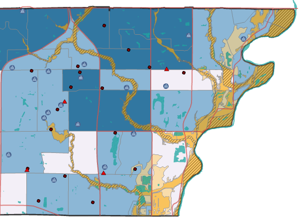
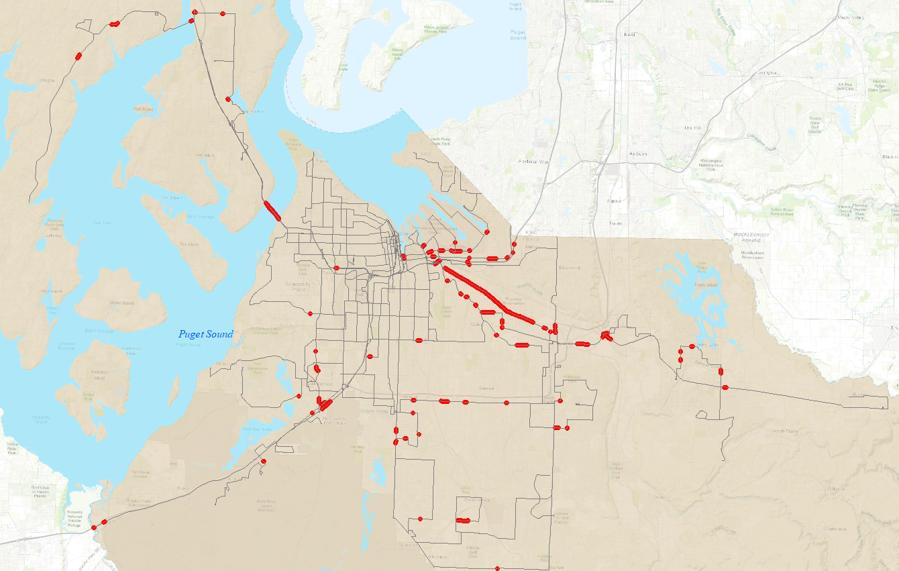

Flood Hazards: Carmel, IN & Pierce County, WA
FEMA Flood Risk: Carmel, IN

Nunc lacinia ante nunc ac lobortis. Interdum adipiscing gravida odio porttitor sem non mi integer non faucibus ornare mi ut ante amet placerat aliquet. Volutpat commodo eu sed ante lacinia. Sapien a lorem in integer ornare praesent commodo adipiscing arcu in massa commodo lorem accumsan at odio massa ac ac. Semper adipiscing varius montes viverra nibh in adipiscing blandit tempus accumsan.
transit Line Flood Risk:, Peirce County, WA

In arcu accumsan arcu adipiscing accumsan orci ac. Felis id enim aliquet. Accumsan ac integer lobortis commodo ornare aliquet accumsan erat tempus amet porttitor. Ante commodo blandit adipiscing integer semper orci eget. Faucibus commodo adipiscing mi eu nullam accumsan morbi arcu ornare odio mi adipiscing nascetur lacus ac interdum morbi accumsan vis mi accumsan.